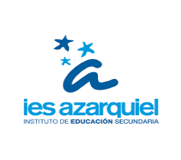

Ellie Rebeca Colorado Alvarado
Toledo, España
Mi motivación radica en la innovación tecnológica y el trabajo en equipo. Busco continuamente soluciones prácticas a desafíos complejos, y mi espíritu colaborativo, apoyado por una sólida base técnica, contribuye al éxito de los proyectos en los que participo. La pasión por la programación me impulsa hacia un desarrollo profesional constante.
A pesar de no estar especializada en desarrollo web, he desarrollado (y sigo desarrollando) esta página web como ejercicio auto-didacta sobre el ciclo de desarrollo y despliegue de aplicaciones web, así como para expandir mis habilidades.
| Empresa | Posición | Periodo | Descripción | Habilidades desarrolladas |
|---|---|---|---|---|
| Programadora de portales | 02/04/2024 - 28/06/2024 | Prácticas de DAM en el departamento de portales de Minsait. |
|
| Institución | Grado | Título | Periodo | Habilidades desarrolladas |
|---|---|---|---|---|
|  | Curso de Especialización | Ciberseguridad en Entornos de las Tecnologías de la Información | 09/2024-06/2025 |
|
| Ciclo Formativo de Grado Superior | Desarrollo de Aplicaciones Multiplataforma | 09/2022 - 06/2024 |
|
ProyectoAD
Aplicación web de gestión de alumnos y asignaturas, inspirada en Papas 2.0.
Habilidades desarrolladas
- Node.js
- MongoDB
- Express
- Javascript
Repositorios
Stray Bullet
Videojuego de disparos en primera persona con base de datos.
Habilidades desarrolladas
- PHP
- Unity
- MySQL
- Photon Pun
- XAMPP
Imágenes


Repositorios
ProyectoUT2
Prototipo de aplicación móvil con usuarios e imágenes, inspirada en Instagram.
Habilidades desarrolladas
- Kotlin
- Jetpack Compose
- Android Studio
Imágenes